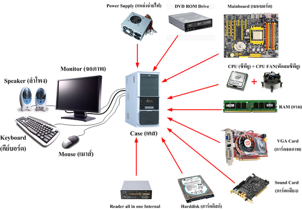
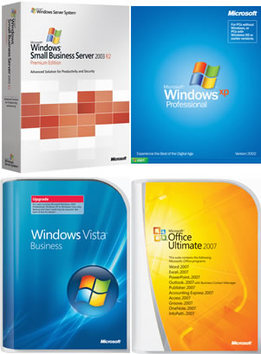
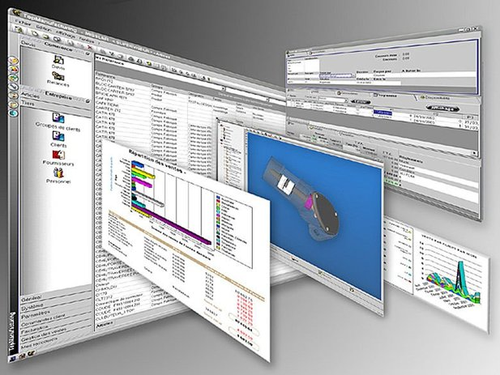

องค์ประกอบของคอมพิวเตอร์
คอมพิวเตอร์ทำงานอย่างเป็นระบบ(System) หมายถึงภายในระบบงานคอมพิวเตอร์ ประกอบด้วยองค์ประกอบย่อยที่มีหน้าที่เฉพาะ ทำงานประสานสัมพันธ์กัน เพื่อให้งานบรรลุตามเป้าหมาย ในระบบงานคอมพิวเตอร์ การที่มีเครื่องคอมพิวเตอร์เพียงอย่างเดียว จะยังไม่สามารถทำงานได้ด้วยตัวเอง ซึ่งหากจะให้คอมพิวเตอร์ทำงานได้อย่างเป็นระบบและมีประสิทธิภาพแล้ว ระบบคอมพิวเตอร์ควรจะประกอบไปด้วยองค์ประกอบคือ
ฮาร์ดแวร์ (HARDWARE)

ฮาร์ดแวร์เป็นองค์ประกอบของตัวเครื่องที่สามารถจับต้องได้ ได้แก่ วงจรไฟฟ้า ตัวเครื่อง จอภาพ เครื่องพิมพ์ คีร์บอร์ด เป็นต้นซึ่งสามารถแบ่งส่วนพื้นฐานของฮาร์ดแวร์เป็น 4 หน่วยสำคัญ
1.1 หน่วยรับข้อมูลหรืออินพุต (Input Unit) ทำหน้าที่รับข้อมูลและโปรแกรมเข้า เครื่อง ได้แก่ คีย์บอรืดหรือแป้นพิมพ์ เมาส์ เครื่องสแกน เครื่องรูดบัตร Digitizer เป็นต้น
1.2 ระบบประมวลผลกลางหรือซีพียู (CPU : Central Processing Unit) ทำหน้าที่ในการทำงานตามคำสั่งที่ปรากฏอยู่ในโปรแกรม ปัจจุบันซีพียูของเครื่องพีซี รู้จักในนามไมโครโปรเซสเซอร์(Micro Processor) ไมโครโปรเซสเซอร์ มีหน้าที่ในการประมวลผลข้อมูล ในลักษณะของการคำนวณและเปรียบเทียบ โดยจะทำงานตามจังหวะเวลาที่แน่นอน เรียกว่าสัญญาณClockเมื่อมีการเคาะจังหวะหนึ่งครั้ง ก็จะเกิดกิจกรรม1ครั้ง เราเรียกหน่วยที่ใช้ในการวัดความเร็วของซีพียูว่า “เฮิร์ท”(Herzt)
1.3 หน่วยเก็บข้อมูล (Storage) ซึ่งสามารถแยกตามหน้าที่ได้เป็น 2 ลักษณะ คือ
1.3.1 หน่วยเก็บข้อมูลหลักหรือความจำหลัก(Primary Storage หรือ Main Memory) ทำหน้าที่เก็บโปรแกรมหรือข้อมูลที่รับมาจากหน่วยรับข้อมูลเพื่อเตรียมส่งให้หน่วยประมวลผลกลางทำการประมวลผล และรับผลลัพธ์ที่ได้จากการประมวลผลเพื่อส่งออกหน่วยแสดงข้อมูลต่อไป
1.3.2 หน่วยเก็บข้อมูลสำรอง(Secondary Storage) เป็นหน่วยที่ทำหน้าที่เก็บข้อมูล หรือโปรแกรมที่จะป้อนเข้าสู่หน่วยความจำหลักภายในเครื่องก่อนทำการประมวลผลโดยซีพียูและเก็บผลลัพธ์จากการประมวลผลนั้นด้วย ปัจจุบันรู้จักในนามฮาร์ดดิสก์(Hard disk) หรือแผ่นฟร็อปปีดิสก์(Floppy Disk)
1.4 หน่วยแสดงข้อมูลหรือเอาต์พุต(Output Unit) ทำหน้าที่ในการแสดงผลลัพธ์ที่ได้จากการประมวลผล ได้แก่ จอภาพ และเครื่องพิมพ์ เป็นต้น ทั้ง 4ส่วนจะเชื่อมต่อกันด้วยบัส (Bus)ere to edit.
ซอฟต์แวร์ (SOFTWARE)

ซอฟต์แวร์ คือโปรแกรมหรือชุดคำสั่ง ที่สั่งให้ฮาร์ดแวร์ทำงาน รวมไปถึงการควบคุมการทำงาน ของอุปกรณ์แวดล้อมต่างๆ เช่น ฮาร์ดดิสก์ ดิสก์ไดร์ฟ ซีดีรอม การ์ดอินเตอร์เฟสต่าง ๆ เป็นต้น ซอฟต์แวร์ เป็นสิ่งที่มองไม่เห็นจับต้องไม่ได้ แต่รับรู้การทำงานของมันได้ ซึ่งต่างกับ ฮาร์ดแวร์ (Hardware) ที่สามารถจับต้องได้ ซึ่งแบ่งเป็น 2 ประเภทคือ
2.1 ซอฟต์แวร์ระบบ (System Software) คือโปรแกรม ที่ใช้ในการควบคุมระบบการ ทำงานของเครื่องคอมพิวเตอร์ทั้งหมด เช่น การบูตเครื่อง การสำเนาข้อมูล การจัดการระบบของดิสก์ ชุดคำสั่งที่เขียนเป็นคำสั่งสำเร็จรูป โดยผู้ผลิตเครื่องคอมพิวเตอร์ และมีมาพร้อมแล้วจากโรงงานผลิต การทำงานหรือการประมวลผลของซอฟต์แวร์เหล่านี้ ขึ้นกับเครื่องคอมพิวเตอร์แต่ละเครื่อง ระบบของซอฟต์แวร์เหล่านี้ ออกแบบมาเพื่อการปฏิบัติควบคุม และมีความสามารถในการยืดหยุ่น การประมวลผลของเครื่องคอมพิวเตอร์ แบ่งออกเป็น 4 ประเภทคือ
2.1.1 โปรแกรมระบบปฏิบัติการ (Operating System) เป็นโปรแกรมที่ใช้ควบคุมและติดต่อกับอุปกรณ์ต่างๆของเครื่องคอมพิวเตอร์ โดยเฉพาะการจัดการระบบของดิสก์ การบริหารหน่วยความจำของระบบ ถ้าขาดซอฟต์แวร์ชนิดนี้ จะทำให้เครื่องคอมพิวเตอร์ไม่สามารถทำงานได้ ตัวอย่างของซอฟต์แวร์ประเภทนี้ได้แก่ โปรแกรมระบบปฏิบัติการ Unix Linux DOS และ Windows (เวอร์ชั่นต่าง ๆ เช่น 95 98 XP Vista ) เป็นต้น
2.1.2 ตัวแปลภาษา (Translator) จาก Source Code ให้เป็น Object Code (แปลจากภาษาที่มนุษย์เข้าใจ ให้เป็นภาษาที่เครื่องเข้าใจ) เป็นซอฟต์แวร์ที่ใช้ในการแปลภาษาระดับสูง ซึ่งเป็นภาษาใกล้เคียงภาษามนุษย์ ให้เป็นภาษาเครื่องก่อนที่จะนำไปประมวลผล ตัวแปลภาษาแบ่งออกเป็นสองประเภทคือ คอมไพเลอร์ (Compiler) และอินเตอร์พีทเตอร์ (Interpeter) คอมไพเลอร์จะแปลคำสั่งในโปรแกรมทั้งหมดก่อน แล้วทำการลิ้ง(Link) เพื่อให้ได้คำสั่งที่เครื่องคอมพิวเตอร์เข้าใจ ส่วนอินเตอร์พีทเตอร์จะแปลทีละประโยคคำสั่ง แล้วทำงานตามประโยคคำสั่งนั้น การจะเลือกใช้ตัวแปลภาษาแบบใดนั้น จะขึ้นอยู่กับภาษาที่ใช้ในการเขียนโปรแกรม
2.1.3 ยูติลิตี้ โปรแกรม (Utility Program) คือซอฟต์แวร์เสริมช่วยให้เครื่องทำงานมีประสิทธิภาพ มากขึ้น เช่น ช่วยในการตรวจสอบดิสก์ ช่วยในการจัดเก็บข้อมูลในดิสก์ ช่วยสำเนาข้อมูล ช่วยซ่อมอาการชำรุดของดิสก์ ช่วยค้นหาและกำจัดไวรัส ฯลฯ เป็นต้น
2.1.4 ติดตั้งและปรับปรุงระบบ (Diagonostic Program) เป็นซอฟต์แวร์ที่ใช้ในการติดตั้งระบบ เพื่อให้คอมพิวเตอร์สามารถติดต่อและใช้งานอุปกรณ์ต่าง ๆ ที่นำมาติดตั้งระบบ ได้แก่ โปรแกรมSetupและ Driver ต่าง
2.2 ซอฟต์แวร์ประยุกต์ (Application Software) คือ ซอฟต์แวร์หรือโปรแกรมที่ทำให้คอมพิวเตอร์ทำงานต่างๆ ตามที่ผู้ใช้ต้องการ ไม่ว่าจะด้านเอกสาร บัญชี การจัดเก็บข้อมูล เป็นต้น ซอฟต์แวร์ประยุกต์สามารถจำแนกได้เป็น 2 ประเภท คือ
2.2.1 ซอฟต์แวร์สำหรับงานเฉพาะด้าน(Special Purpose Software) คือ โปรแกรมซึ่งเขียนขึ้นเพื่อการทำงานเฉพาะอย่างที่เราต้องการ บางที่เรียกว่า User’s Program เช่น โปรแกรมการทำบัญชีจ่ายเงินเดือน โปรแกรมระบบเช่าซื้อ โปรแกรมการทำสินค้าคงคลัง เป็นต้น ซึ่งแต่ละโปรแกรมก็มักจะมีเงื่อนไข หรือแบบฟอร์มแตกต่างกันออกไปตามความต้องการหรือกฏเกณฑ์ของแต่ละหน่วยงานที่ใช้
2.2.2 ซอฟต์แวร์สำหรับงานทั่วไป(General Purpose Software) เป็นโปรแกรมประยุกต์ที่มีผู้จัดทำไว้ เพื่อใช้ในการทำงานประเภทต่างๆ ทั่วไป โดยผู้ใช้คนอื่นๆ สามารถนำโปรแกรมนี้ไปประยุกต์ใช้กับข้อมูลของตนได้ แต่จะไม่สามารถทำการดัดแปลง หรือแก้ไขโปรแกรมได้ ผู้ใช้ไม่จำเป็นต้องเขียนโปรแกรมเอง ซึ่งเป็นการประหยัดเวลา แรงงาน และค่าใช้จ่ายในการเขียนโปรแกรม ดังนั้นการใช้โปรแกรมสำเร็จรูปจึงเป็นสิ่งที่อำนวยความสะดวกและเป็นประโยชน์อย่างยิ่ง ตัวอย่างโปรแกรมสำเร็จรูปที่นิยมใช้ได้แก่ MS-Office, Adobe Photosho, Internet Explorer และ เกมส์ต่างๆ เป็นต้น

บุคลากร (PEOPLEWARE)
บุคลากรจะเป็นสิ่งสำคัญที่จะเป็นตัวกำหนดถึงประสิทธิภาพถึงความสำเร็จและความคุ้มค่าในการใช้งานคอมพิวเตอร์ ซึ่งสามารถแบ่งบุคลากรตามหน้าที่เกี่ยวข้องตามลักษณะงานได้ 6 ด้าน ดังนี้
3.1 นักวิเคราะห์และออกแบบระบบ (Systems Analyst and Designer : SA) ทำหน้าที่ศึกษาและรวบรวมความต้องการของผู้ใช้ระบบ และทำหน้าที่เป็นสื่อกลางระหว่างผู้ใช้ระบบและนักเขียนโปรแกรมหรือปรับปรุงคุณภาพงานเดิม นักวิเคราะห์ระบบต้องมีความรู้เกี่ยวกับระบบคอมพิวเตอร์ พื้นฐานการเขียนโปรแกรม และควรจะเป็นผู้มีความคิดริเริ่มสร้างสรรค์มีมนุษย์สัมพันธ์ที่ดี
3.2 โปรแกรมเมอร์ (Programmer) คือบุคคลที่ทำหน้าที่เขียนซอฟต์แวร์ต่างๆ(Software) หรือเขียนโปรแกรมเพื่อสั่งงานให้เครื่องคอมพิวเตอร์ทำงานตามความต้องการของผู้ใช้ โดยเขียนตามแผนผังที่นักวิเคราะห์ระบบได้เขียนไว้
3.3 ผู้ใช้ (User) เป็นผู้ใช้ระบบคอมพิวเตอร์ ซึ่งจะเป็นผู้ปฏิบัติหรือกำหนดความต้องการในการใช้ระบบคอมพิวเตอร์ว่าทำงานอะไรได้บ้าง ผู้ใช้งานคอมพิวเตอร์ทั่วไป จะต้องเรียนรู้วิธีการใช้เครื่อง และวิธีการใช้งานโปรแกรม เพื่อให้โปรแกรมที่มีอยู่สามารถทำงานได้ตามที่ต้องการ
3.4 ผู้ปฏิบัติการ (Operator) สำหรับระบบขนาดใหญ่ เช่น เมนเฟรม จะต้องมีเจ้าหน้าที่คอมพิวเตอร์ที่คอยปิดและเปิดเครื่อง และเฝ้าดูจอภาพเมื่อมีปัญหาซึ่งอาจเกิดขัดข้อง จะต้องแจ้ง System Programmer ซึ่งเป็นผู้ดูแลตรวจสอบแก้ไขโปรแกรมระบบควบคุมเครื่องอีกทีหนึ่ง
3.5 ผู้บริหารฐานข้อมูล (Database Administrator : DBA) บุคคลที่ทำหน้าที่ดูแลข้อมูลผ่านระบบจัดการฐานข้อมูล ซึ่งจะควบคุมให้การทำงานเป็นไปอย่างราบรื่น นอกจากนี้ยังทำหน้าที่กำหนดสิทธิการใช้งานข้อมูล พร้อมทั้งดูแลดาต้าเบสเซิร์ฟเวอร์ให้ทำงานอย่างปกติด้วย
3.6 ผู้จัดการระบบ (System Manager) คือ ผู้วางนโยบายการใช้คอมพิวเตอร์ให้เป็นไปตามเป้าหมายของหน่วยงาน เป็นผู้ที่มีความหมายต่อความสำเร็จหรือล้มเหลวของการนำระบบคอมพิวเตอร์เข้ามาใช้งานเป็นอย่างมาก
ข้อมูลและสารสนเทศ
1 ข้อมูล (DATA)
หมายถึง ข้อเท็จจริงหรือเหตุการณ์ที่เกิดขึ้น แล้วใช้ตัวเลขตัวอักษร
หรือสัญลักษณ์ ต่างๆ ทำความหมายแทนสิ่งเหล่านั้น เช่น
· คะแนนสอบวิชาภาษาไทยของนักเรียน
· อายุของพนักงานในบริษัทชินวัตรจำกัด
· ราคาขายของหนังสือในร้านหนังสือดอกหญ้า
· คำตอบที่ผู้ถูกสำรวจตอบในแบบสอบถาม
4.2 สารสนเทศ (INFORMATION)
หมายถึง ข้อสรุปต่างๆ ที่ได้จากการนำข้อมูลมาทำการวิเคราะห์ หรือผ่านวิธีการที่
ได้กำหนดขึ้น ทั้งนี้เพื่อนำข้อสรุปไปใช้งานหรืออ้างอิง เช่น
· เกรดเฉลี่ยของวิชาภาษาไทยของนักเรียน
· อายุเฉลี่ยของพนักงานในบริษัทชินวัตรจำกัด
· ราคาขายสูงสุดของหนังสือในร้านหนังสือดอกหญ้า
· ข้อสรุปจากการสำรวจคำตอบในแบบสอบถาม
กระบวนการทำงาน (PROCEDURE)
องค์ประกอบด้านนี้หมายถึงกระบวนการทำงานเพื่อให้ได้ผลลัพธ์ตามต้องการ
ในการทำงานกับคอมพิวเตอร์ผู้ใช้จำเป็นต้องทราบขั้นตอนการทำงานเพื่อให้ได้งานที่ถูกต้องและมีประสิทธิภาพ ซึ่งอาจจะมีขั้นตอนสลับซับซ้อนหลายขั้นตอน ดังนั้นจึงมีความจำเป็นต้องมีคู่มือปฏิบัติงาน เช่น คู่มือผู้ใช้ ( user manual ) หรือคู่มือผู้ดูแลระบบ ( operation manual ) เป็นต้น
หลักการทำงานของคอมพิวเตอร์
ระบบการทํางานของคอมพิวเตอร์ การทํางานของคอมพิวเตอร์ แบ่งออกเป็น 4 ส่วน ดังนี้
1. หน่วยรับข้อมูล (Input Unit)
ทําหน้าที่ในการรับข้อมูลหรือคําสั่งจากภายนอกเข้าไปเก็บไว้ในหน่วยความจํา เพื่อเตรียมประมวลผลข้อมูลที่ต้องการ ซึ่งอุปกรณ์ที่ใช้ในการนําข้อมูลที่ใช้กันอยู่ตั้งแต่อดีตจนถึงปัจจุบันนั้น มีอยู่หลายประเภทด้วยกันสําหรับอุปกรณ์ที่นิยมใช้ในปัจจุบันมี ดังต่อไปนี้
- Keyboard
- Mouse
- Disk Drive
- Hard Drive
- CD-Rom
- Magnetic Tape
- Card Reader
- Scanner
2. หน่วยประมวลผลกลาง (Central Processing Unit)
ทําหน้าที่ในการคํานวณและประมวลผล แบ่งออกเป็น 2 หน่วยย่อย คือ
- หน่วยควบคุม ทําหน้าที่ในการดูแล ควบคุมลําดับขั้นตอนของการประมวลผล และการทํางานของอุปกรณ์ต่างๆ ภายในหน่วยประมวลผลกลาง และช่วยประสานงานระหว่างหน่วยประมวลผลกลาง กับอุปกรณ์นําเข้าข้อมูล อุปกรณ์ในการแสดงผล และหน่วยความจําสํารอง
- หน่วยคํานวณและตรรก ทําหน้าที่ในการคํานวณและเปรียบเทียบข้อมูลต่างๆ ที่ส่งมาจากหน่วยควบคุม และหน่วยความจํา
3. หน่วยความจำ (Memory)
ทําหน้าที่ในการเก็บข้อมูลหรือคําสั่งต่างๆ ที่รับจากภายนอกเข้ามาเก็บไว้ เพื่อประมวลผลและยังเก็บผลที่ได้จากการประมวลผลไว้เพื่อแสดงผลอีกด้วย ซึ่งแบ่งออกเป็นหน่วยความจํา เป็นหน่วยความจําที่มีอยู่ ในตัวเครื่องคอมพิวเตอร์ ทําหน้าที่ในการเก็บคําสั่งหรือข้อมูล แบ่งออกเป็น
- ROM หน่วยความจําแบบถาวร
- RAM หน่วยความจําแบบชั่วคราว
- หน่วยความจําสํารอง เป็นหน่วยความจําที่อยู่นอกเครื่อง มีหน้าที่ช่วยให้หน่วยความจําหลักสามารถเก็บ ข้อมูลได้มากขึ้น
4. หน่วยแสดงผล (Output Unit)
ทําหน้าที่ในการแสดงผลลัทธ์ที่ได้หลังจากการคํานวณและประมวลผล สําหรับอุปกรณ์ที่ ทําหน้าที่ในการแสดงผลข้อมูลที่ได้นั้นมีต่อไปนี้
- Monitor จอภาพ
- Printer เครื่องพิมพ์
- Plotter เครื่องพิมพ์ที่ใช้ปากกาในการเขียนข้อมูลต่างๆ ที่ต้องการลงกระดาษ
|